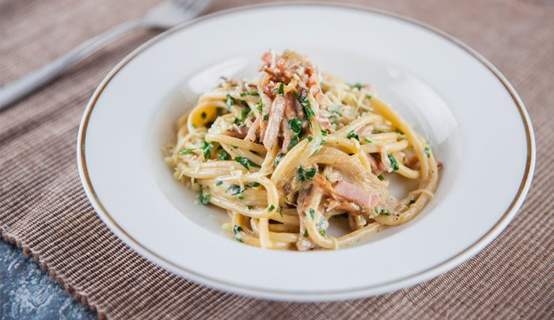

Creamy Carbonara

Ingredients:
How to make:
1. In a large pot of boiling salted water, cook pasta according to package instructions; reserve 1/2 cup water and drain well.
2. In a small bowl, whisk together eggs; set aside.
3. Heat a large skillet over medium high heat. Add bacon and cook until brown and crispy, about 6-8 minutes; reserve excess fat.
4. Stir in garlic until fragrant, about 1 minute. Reduce heat to low.
5. Working quickly, stir in pasta and egg mixture, and gently toss to combine;
season with salt and pepper, to taste. Add reserved pasta water, one tablespoon at a time, until desired consistency is reached.
6. Serve immediately, garnished with parsley, if desired.